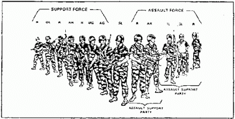
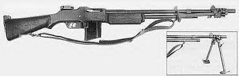
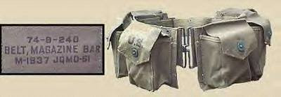

Vanderboegh: Absolved - - The Squad -- BAR

"Fire
without movement is indecisive. Exposed movement without fire is
disastrous. There must be effective fire combined with skillful
movement." -- Marine Rifle Squad, Fleet Marine Force Manual 6-5
The Squad – BAR
A Chapter of 'Absolved'
by Mike Vanderboegh
Students
of Marine Corps tactics are taught that the smallest tactical and
maneuver element in the Corps is the fire team. Many combat-tested squad
leaders, however ' might regularly dispute this contention. As a
newly-arrived platoon commander in Vietnam, I ordered fire team rushes
during the heat of one of my first contacts. I was subsequently amazed
to watch a lone figure burst forth from the squad on my left, and I
rushed to query the squad leader concerning his understanding of my
orders.
"THAT," he answered, "WAS my first fire team."
This
experience, although humorous in retrospect, was by no means unique. It
probably was more common than being blessed with a continual full
complement of Marines. In fact, its very frequency serves to cast
aspersions upon the effectiveness of the fire team. If a fire team
sustains only two casualties, or even one in some instances, it simply
ceases to exist as a tactical or maneuver unit. Thus it seems that this
vital link, which provides the foundation for our entire tactical and
administrative structure, lacks the flexibility to function properly at
less than full strength. -- James Webb, "Flexibility and the Fire Team," Marine Corps Gazette, April 1972
An Embarrassment of Riches
Bill
Curtis' squad had started out as just two friends getting ready for
uncertain times. That was back in the Nineties, after Waco. It was just
Bill and his friend Denny Powell. One buddy team. Friends in high
school, both of them were now veterans. They'd come home after Desert
Storm and left the rapidly downsizing military -- Bill had been Army,
Denny had been a Marine -- to take up wives and civilian careers in
their native home, Double Springs, Alabama.
Now they each had
teenage sons, two of whom also shouldered weapons in the squad. That was
the way it was with militia, a confluence of like-minded friends,
bolstered by family. There were folks who allowed themselves to be
paralyzed by fear of linking up with others, worried (and not
necessarily irrationally) about federal snitches, provocateurs, or just garden-variety nut-burgers.
Not
Bill and Denny. They'd had their share of experiences with all three
over the years, but they just kept on training and building their unit,
staying legal, keeping their eyes focused on creating skilled riflemen.
It probably helped that they each had lots of cousins. You didn't have
to vet somebody you'd known all your life. There were four cousins in
the squad.
But the rest were just friends or neighbors they met
over coffee at school events, talking politics, finding like minds and,
more importantly, people willing to do something more than talk. They'd
started out with just a buddy team, themselves, and then found another
couple of hunters who had the same idea. Another buddy team plus theirs
and now they had a fire team. It was pure dumb luck that they ran into
another bunch of guys training in the Bankhead National Forest one
weekend in 1996. One pickup truck of camo-painted faces carrying rifles
met three more pickup trucks of camo-painted faces carrying paintball
guns and of course they'd stopped to ask questions.
The
"commander" of that bunch hadn't been able to do a thing when Bill and
Denny cherry-picked his unit of the best and the brightest. The squad's
training was far more challenging and focused than paintball games, and
it attracted the more motivated. Over the years, the unit had waxed and
waned, dropping men who fell out because of changing circumstances or,
more often, the demands of their wives.
Bill and Denny tried hard
to make sure the wives of their people were happy, and that they
networked with other spouses so the FTX weekends wouldn't be dead time
for them. Cheryl, Bill's wife, and Clarisse, Denny's better half, had
helped immensely with that. As Cheryl told him with a tinge of
exasperation, "You know, we wives get together out of self-defense. If
you're going to run off every other weekend and play soldier, the least
we can do is have as much fun as you are," adding, "and when did you say
you're going to get around to cleaning the gutters?"
If somebody
needed time off to deal with a home situation, nobody ragged him. And
for the most part, they always came back. Bill had a policy, "Don't
shoot the wounded." Even when a guy didn't come back to the squad, they
always parted as friends.
After Y2K and the passing of the
Clintonistas from the national political stage, more men dropped out
because they thought the threat had evaporated with the political
retirement of the Great Fornicator. But with the election of the current
president, and especially after the Battle of Sipsey Street, events had
once again conspired to bring the old volunteers back, bringing
younger, newer ones with them.
What was it Ben Franklin had said?
"Nothing concentrates the mind so wonderfully as the prospect of being hung in the morning."
Of
course they had always been friendly with Will Shipman's bunch and had
trained with them from time to time. But Bill's squad always considered
themselves a cut above Will's unit because they had tighter standards
and were more physically fit. Fitness was the key to living in combat,
Bill knew, and he insisted upon it.
"I'm trying to keep you alive," he'd said to the complainers. "And me too."
It
had been a constant struggle, though, and he had probably lost more
volunteers from inability or unwillingness to physically hack the
training than any other single cause. Bill had to admit that even for
him it was HARD to motivate yourself when there didn't seem to be threat
looming on the horizon.
Now, however, he didn't have that problem.
Now events had managed to grab all of their attention.
In
fact, the new volunteers scared up by the current crisis had allowed
him to spin off another squad of the guys who were too old, too young,
too out-of-shape, or who had health conditions of one kind or another.
He'd organized them into a something like a logistics and support unit
and given command of it to John Stentinius, a Marine veteran of Vietnam
and Lebanon with an artificial leg to replace the one he'd lost in the
Embassy bombing and who had more grit, gumption, and brains than the
rest of them combined. John now had his people busy extending and
improving the system of supply caches that Bill and Denny had started
back in the Nineties in the Forest, and up in the Sipsey Wilderness
area. They were also working on getting communications links of various
kinds up and running.
He'd had to transfer some of his old
friends to the support element, and none of them had liked it very much.
But there were plenty of young, experienced soldiers and Marines back
from the wars in Iraq and Afghanistan who were far better suited for
what was coming. It was no shame to admit the ravages of time, he'd told
the old guys, but they had hated it all the same.
Even so, if
the volunteers kept coming in at this rate, he could have another
combat-ready squad in a month, maybe less. He'd probably give command of
that to one of the experienced newbies, Mike Parker probably. Parker
had come back from Iraq with a Silver Star and the rest of the men
looked up at him as a demi-god of war, which he damn near was.
He certainly was a competent squad leader, Bill thought, probably -- no, positively -- better than me.
Besides,
Bill and Denny were like an old married couple by now. They'd had every
argument they could possibly have and had still remained friends, and
Bill didn't know what he'd do without Denny as assistant squad leader.
But if they grew much bigger, eventually Bill was going to be a platoon
leader not a squad leader, and then what would he do with Denny?
The
first real argument they'd had, Bill recalled, was over the size of the
squad. Denny had insisted that if they ever got big enough, they should
organize along the lines of a Marine rifle squad -- three four-man fire
teams and a squad leader. Bill, thinking that they'd never get that big
anyway, had a preference for the smaller Army squad.
"We won't
have any support weapons," Denny had argued, "we'll need all the
shooters we can get." And he'd added, "Besides, if we think small, we'll
always BE small. We ought to try to grow this as big as we can."
It
had all been merely academic until they finally did get that big, but
Bill eventually had conceded Denny's point. They would use the proven
triangular Marine system -- one attacking, two providing cover fire and
security -- and they would concentrate on making competent riflemen who
could move, communicate and most of all shoot, dealing out deadly,
aimed, semiautomatic fire.
Of course they were hampered initially
by the miscellany of weaponry the volunteers brought to the task. Deer
rifles, shotguns, SKS's, Garands, AR and AK clones - you name it. It was
a logistician's nightmare -- and a small unit commander's, if he cared
about standardization and the benefits that it brought in combat --
which Bill did.
It was better now. Over the years the committed
men of his squad -- and those who'd stayed were ALL committed -- had
worked, scrimped and saved to buy better, more capable weapons. The best
shot in each fire team was a dedicated marksman now with a semi-auto
rifle in 7.62 NATO or .30-06. The 7.62x39 ammo famine had been one more
reason to leave the SKS's and AK's in the gun safes at home, although
one fire team had merely swapped out their AK-47s for AK-74s in 5.45x39,
which was still available and relatively cheap, although "relatively"
and "cheap" were two words of decreasing importance these days.
At
the outset of World War II, the Marine rifle squad was composed of 12
men, with no particular internal organization. This setup literally came
under fire early in that war, as it proved immensely difficult for a
squad leader to maintain control over as many as 11 men at one time.
Therefore, after a number of attempts to rectify the I e situation, our
present fire team organization was instituted in 1944. It has a number
of advantages over the former system, and has been widely heralded due
to its "triangular concept" which offers maximum control,
maneuverability, and firepower. indeed, when compared to the "12-man
mob" its advantages in these areas are striking:
Control. This
was perhaps the greatest advantage of the new system as the squad leader
had three subordinate leaders in his span of control instead of 11 men.
This produced more effective supervision.
Maneuverability. With
the creation of a Four man fire team, a smaller tactical unit capable of
independent maneuver evolved. This served to eliminate the spur of the
moment "you take Smith and Jones and go over there" approach and
ostensibly brought into existence a bonafide maneuver element below the
squad level.
Firepower. The fire team was created to gain maximum
employment of the Browning Automatic Rifle (BAR). in fact, the whole
fire team concept was built around the BAR, which provided the nucleus
of the team's firepower. Fire team formations were designed to protect
the automatic rifleman, and one rifleman was assigned a secondary
mission of aiding the automatic rifleman in, finding targets and
reloading magazines.
This arrangement was highly successful in
exploiting the BAR (and later the M-14 automatic) to full advantage; the
maximum use and protection of the automatic rifle seems to be the main
justification behind the present fire team concept. With the advent of
the M-16, however, this nucleus of the fire team has disappeared. Now
there may be justification for reorganization. In this regard, it is
recognized that Marine Corps planners are searching for a heavy
automatic weapon which would provide the fire team with the same type of
firepower that the BAR and M-14 automatic did; however, two points must
necessarily be made concerning this. First, there is currently no such
weapon in use, and no positive guarantee that one will be found, while
the M-16 is currently being used. And secondly, instead of finding a new
automatic rifle of this type, perhaps a better solution would be to
retain the M-16 and reorganize the fire team. -- James Webb, "Flexibility and the Fire Team," Marine Corps Gazette, April 1972
But
now, thanks to the influx of new volunteers, some of them very
experienced in the ways of war, and Will Shipman's largesse, Bill was
faced with an embarrassment of riches. Who could have believed in the
early years of this decade, when they were scraping by with doing
mini-FTXs with six guys armed with whatever they could scrape together,
that he would have this problem?
"Bee-A-Are"
You
may not be armed now with a BAR (Browning Automatic Rifle M1918A2), but
you are expected to know all about the weapon, because your fire team
is built around it. Your squad is built upon its teams. If your team's
BAR man is knocked out, the weapon must be manned and this assignment
may fall to you. You have to grab that BAR and get it into operation.
You have to keep it in operation. You will be the BAR man. At present,
there are three Browning Automatic Rifles assigned to each rifle squad,
with nine in a rifle platoon. This gives each company 27 BARs. Because
these weapons are light, maneuverable, and have great firepower, they
are the most vital weapons of your platoon. You must learn all about the
BAR now as future insurance. -- "The Automatic Rifle," Guidebook for Marines, Chapter 15, 1 May 1948, p. 163.
They'd met, seemingly by chance, at the Double Springs Tastee Freeze.
Will
Shipman's invitation had been intriguing: "Come on by the house after
work and bring your pickup truck with the cap on it. I've got something
for you. Oh, yeah, and bring a couple of your best guys."
That was all, and he wouldn't elaborate.
It
was three days after what the press was calling "The Winston County
Massacre." By order of the Governor, the ATF and Brightfire thugs were
gone, replaced by Winston County sheriff deputies and Alabama state
troopers. Those few federal undercover agents still in place wore ABI
surveillance that was as close and intimate as their underwear.
The feds no longer ruled Winston County.
Will
was waiting for Bill and his boys on the porch when they drove up.
"Drive around to the barn," he called out to them. "I'll be with you in a
minute." They were out of the truck by the time Will came around the
house and Bill started to ask what this was all about.
Will cut him off with an upraised palm.
"Please
hold all questions until the end of the presentation," imitating the
voice of Wilson Shropshire, the Double Springs High School principal who
had served for three decades before passing away of a heart attack at
his desk. They all recognized their old principal's measured tones and
laughed.
Will unlocked the high-security padlock on the sliding
door. That's new, thought Bill. "All right, boys," Will said as he slid
back the big door, "come on in and shut the door behind you." He walked
over to the light switch and gave it a flick. Overhead flourescents
flickered into brilliance. Bill Curtis and Denny Powell followed Will
in. Mike Parker turned and slid the door shut.
Mike Parker
whistled softly. The barn was packed with crates, Bill saw. No, not just
crates, military crates. Some had tarps over them and some had recent
spray black paint over the markings. What the . . .
Will turned to face Bill Curtis. "How big is your unit now, Bill?"
"Total? About 32, with more coming in every day," Curtis answered. "The ATF and Brightfire are really great recruiters for us."
Shipman nodded. "You know, Bill, I always appreciated the fact that you grew your own unit and never tried to cherry-pick mine."
Curtis answered with a smile, "That's because I figured you'd beat the hell out of me if I tried."
"You're right. I would have. But we've both cooperated for so long I think of y'all as my own."
Curtis
started to open his mouth and Will Shipman saw the objection coming.
"Don't get your panties in a wad. I'm not trying to take over your unit,
although the time may come soon when you'll want me to. Let's just say
for right now that we're brothers in arms and I can stand having you
better armed, is all. We've both got plenty of enemies out there, don't
you think? DOMESTIC enemies?"
Overcome by curiosity about what
was in the crates, Bill was going to let slide that crack about wanting
Will to take over. So he merely replied, "Yeah, they buried the Sheriff
today on account of some of those domestic enemies."
Will nodded again. "I went to the funeral." The Sheriff and his two deputies were buried in a common ceremony.
Almost all of the county and half the state had turned out for it. The Governor was even there. So was Jack Durer.
Will
continued, "Anyway, I've got some presents for you and your boys. It's
time to spread around the Shipman family fortune, I think."
Bill Curtis was fit to bust. "Quit beatin' around the bush, Shipman, and tell me what's on your mind."
Shipman
grinned and turned to a shorter stack of crates in front of the others.
"This," he said as he pulled the tarp off, "is what's on my mind."
On top of the stack of crates was twenty pounds of parkerized steel and gleaming, linseed oil-soaked wood on a bipod.
The
three men gaped at the sight. Finally, Bill Curtis said,
"Whole-E-SHIT." It wasn't an exclamation, as much as a benediction. Mike
Parker added, "That's a fact." They all moved forward to look at it,
but nobody wanted to touch it, lest the mirage disappear.
Shipman
smiled indulgently, like a dime store Santa Claus at a bunch of
goggle-eyed kids. "This, my friends, is an M1918A2 Browning Automatic
Rifle manufactured by the International Business Machines Corporation in
1944. It is new and fresh out of the cosmoline. I've got magazines and
ammunition to go with it."
Mike Parker jumped on that. "How many mags? How much ammunition?"
Shipman
replied, "For you? Twenty magazines and 2000 rounds of ball in
bandoleers and stripper clips per rifle." He added, "I've also got web
gear to go with each BAR."
Parker whistled again, and then asked the last, vital question. "How many rifles are you going to let us have?"
"Well,
I've been thinkin' on that. Allowin' for your unit growin' and all,
plus maybe puttin' some ammo and rifles in caches for back up, I figured
on ten. If you grow your unit some later, there's more where these came
from."
"How many more?" asked Parker.
"There's a hundred total, counting these."
Bill Curtis said the only thing he could think of. "Well, shit and shove me in it."
Shipman laughed. "If you insist. I've got a manure pile out back that's handy."
Denny Powell finally recovered his voice. "Where in the name of God . . ."
"Well," replied Will Shipman slowly, "that's a long story."
So he told them about the preacher's son, the deacon and the boxcar. He gave them the short version.
When
Will was finished, Bill Curtis looked at the BAR again, longingly,
lovingly. In wonder, he said again, "Well, shit and shove me in it."
"There's more," Shipman offered.
"What?" asked all three men at once, as if on cue.
"Hand
grenades. Old World War II frags, but they work. Some M15 Willy Peter
smokes. Rifle grenades. High Explosive Anti-Tank dual purpose and Willy
Peters. Springfield rifles with attachments to launch 'em and the blank
cartridges to make 'em fly. You can have ten Springfields, too. That's a
case of them right there," Will said as he pointed at the bottom of the
stack of crates. "And another 10,000 rounds of ammo to go with 'em.
It's corrosive of course, and you'll have to be scrupulous about
cleanin' the weapons, but it's got one advantage over modern
non-corrosive."
"What's that?" asked Mike Parker.
"It's free, son," replied Shipman, "it's all free."
Bill
Curtis knew enough to look a gift horse in the mouth. "And what will
you be wantin', Will Shipman, in payment for all these 'free' toys?" He
knew the answer, but he wanted to hear it from Will's own mouth.
Will
looked offended, then smiled craftily, and then, he turned deadly
serious. "What I want, Billy Curtis, is for you and your bunch to come
runnin' if me and mine get hit. Just like I'll come runnin' if you get
hit. There's a war comin'. If you hadn't noticed, it's already here. So
what I WANT is for you and yours to get real familiar with these
'toys'," Will ground out the word with emphasis, "so you won't blow your
own balls off when I need you. I need you to be blowin' the other
bastards' balls off when, and not if, they come back."
Will
paused, then turned friendly again. "What I want in return for the
firepower is for you to show me what a competent small unit leader I
know you to be. Good enough?" He stuck out his hand.
Curtis didn't hesitate. He shook Will Shipman's hand. It was a blood oath and they both knew it.
"Hell,
Billy," said Shipman, "your boys are better than my boys because you've
had 'em trainin' for years when mine were just laid up and watchin' war
movies on the DVD. I'm smart enough to know that. Well, my boys are
gettin' ready again, but your boys are ready now. Think of this as a
return on all that sweat equity you put in."
Bill nodded at the
complement, equally pleased that it had been given and also in the
knowledge that it was indisputably true. Then a thought occurred to him.
"You
know," observed Bill Curtis, "this ain't the first time the Curtises
and the Shipmans have stood shoulder to shoulder against an enemy."
"No,"
allowed Will, "it ain't." He paused, and then clapped the younger man
on the shoulder and proclaimed, "The First Alabama Union Cavalry
Regiment rides again."
Curtis reached out for the BAR, but
Shipman beat him to it. "Get your own damn BAR, this one's mine. It took
me half the night to get the cosmoline off'n it. It was like petrified
dinosaur turd after almost seventy years in that mine. Go clean your
own."
"Okay," said Bill Curtis good naturedly. "C'mon, boys," he
said to Denny and Mike, "let's get this stuff loaded and back home." The
work party set to their task with enthusiasm.
Will Shipman just stood back and enjoyed the scene.
He could afford to, bein' Santa Claus and all.
T.O. & E.
The
key weakness of our present system is a lack of flexibility. The
present fire team concept cannot absorb casualties and continue to
function adequately, does not properly use the team leader as a unit
leader, and is poorly suited to the M-16 rifle. However, it is far
superior to previously attempted concepts and there seems to be a
question as to whether a better system could ever be found. There is a
better system which is easily adaptable to today's Marine Corps. It
involves no changes in manning levels and has been combat tested. It
involves changing the fire team from its present four-man structure to a
six-man team composed of a fire team leader, assistant fire team
leader, and four riflemen. Let's examine the advantages using the
triangular concept as a reference point. -- James Webb, "Flexibility and the Fire Team," Marine Corps Gazette, April 1972
Tommy
Powell, Denny's oldest son, tossed and turned in a dream from which he
could not awaken. People were trying to kill him and they shouted in
strange languages. There was a wall. They had to make it to the wall,
somebody yelled.
His dad? No. Somebody else.
He followed
him as the bangs and flashes and zips seemed to come from everywhere.
Somebody in front of him got hit. Tommy could see the blood and tissue
blown out the back of the man's thigh. He knew that he knew him but he
couldn't remember his name. Young like me. The rifle, someone else
screamed, get the rifle. Tommy slung his own and picked it up. It was
big and heavy, but somehow though he'd never seen one before, he knew
how it worked.
He made it to the wall, and woke up covered with
sweat, the shots and the shouts and the screams still echoing in his
ears. He was in his room. It was quiet in the room, still early evening
and he had to go to school tomorrow. Beyond the door, he could hear the
muffled news on the television downstairs as his mom waited for his dad
to come home. He lay back down on the sweat-soaked covers and closed his
eyes, but sleep wouldn't come for a long time.
"Well, if we drop
back into the old late World War II/Korean War model used by the
Marines, then that makes it one grenadier and one BAR per fire team,
with one rifleman designated as the assistant BAR man," said Denny
Powell.
They were all in the cab of Bill Curtis' pickup, on the
way home to examine their new toys. They were discussing how this
embarrassment of riches would fit into their Table of Organization and
Equipment, their T.O. & E.
"We've already got a Designated
Marksman per fire team," said Curtis. "We never figured on getting
automatic weapons and the DM was supposed to sub for that. So do we give
up the DM? You can't make the Assistant BAR man do anything else but
that, right? Are we going to have fire teams made up of all specialists
except for the team leader? Who's going to be the rifleman/scout? The
DM? The team leader?"
Denny Powell replied, "Look, I don't have
an answer yet, I'm just thinking out loud here, so bear with me. The
Marines summarize their fire team organization with the phrase
"ready-team-fire-assist", since that's the arrangement of the fire team
when its in a column. 'Ready' is the rifleman/scout. 'Team' is the team
leader, who also works as a grenadier with an M203."
Mike Parker broke in, "You can't have a team leader with a bolt action rifle, it's too damn slow."
"Yeah,
yeah, I know," said Denny, "let me finish the thought. OK. The
automatic rifleman, nowadays armed with an M249 SAW, also served as
second in command of the fire team and is called "Fire." The AAR carries
his extra ammunition and is called 'Assist.' That way, when you're
communicating in the middle of a firefight, nobody has to guess who's
being addressed."
Denny paused for a moment.
Mike said, "Well . . ." but Denny cut him off.
"Let
me finish. So you move by rushes. If you take fire, the fire team is
organized in such in a methodical way as to engage the enemy with fire
team 'rushes' -- movement by one part of the team during cover by fire
by the other part of the team. Usually, its first the Rifleman and Team
Leader will move ahead, being covered by the Automatic and Assistant
Automatic Riflemen, then the Automatic and Assistant Automatic Riflemen
will move up to the Rifleman and Team Leader, being covered by the
Rifleman and Team Leader, and so on. The process is repeated until you
can't go any farther without serious risk to the entire fire team. Of
course the team is also covered by other fire teams in the squad. The
optimum ratio of support fire teams to attacking fire teams is 2 to 1.
Somebody actually did a study on it. Some Army general, I think, I read
an article about it once, General Dupree or something."
Mike Parker corrected him, "DePuy."
"Yeah, that's it." Denny took a sip from his Diet Mountain Dew and continued.
"Anyway,
once you're on the objective, the fire team assumes a 'hasty 180',
where the Automatic Rifleman covers 11 o'clock to 1 o'clock (12 o'clock
being the most likely avenue of enemy approach), with the Rifleman and
Assistant Automatic Rifleman covering 9 to 11 and 1 to 3 respectively.
The Team Leader is next to the Automatic Rifleman to complement his fire
with grenade rounds and to assign targets for the M249. Once a frontal
enemy counterattack is deemed unlikely, the fire team then will assume a
'consolidated 360' to secure the flanks."
Curtis cut in, "And your point is?"
Denny
responded with more than a little exasperation. "I told you, I don't
have a point yet, I'm thinking out loud. But I don't see how putting a
bolt action rifle into the mix is going to work. It's too thin. And what
if you have casualties? The whole damn thing breaks down."
"Well,
we don't have to use the Springfields, you know," said Bill. "We can
shoot the grenades off an M1 or M14 type rifle, even an AR come to
that."
"Where would we get the grenade blanks?" asked Denny.
"I
heard one of Kraut Mueller's guys had some for sale at the last AGCA
gunshow. They're rollin' their own now. Had 'em in all calibers,"
replied Bill.
"Guys," interjected Mike Parker, "maybe there's another way."
"What?" asked Bill and Denny simultaneously.
Mike Parker smiled. Sometimes these guys were like an old couple that had been married since kindergarten.
He began to explain.
The most obvious advantage of a six-man fire team is its overall flexibility in every area of the triangular concept.
Control.
The team leader's ability to control his unit should not be affected by
the addition of two men. Col Hays established the maximum limit for
control at seven men. The newly organized fire team would provide its
leader with a maximum of five men, well within the seven man limit, and
certainly more challenging than the present maximum of three. Abolishing
the automatic rifleman and the key positions he presently occupies,
plus the addition of two more men, gives the fire team leader the
advantage of placing himself where he can best control his unit. The
final control consideration is the creation of an assistant team leader
who would be ready to take charge without hesitation. He would also
occupy key positions in tactical formations.
Maneuverability. A
six-man fire team could sustain up to three casualties and still exist
as an effective maneuver element, thus fulfilling its mission of being a
tactical and maneuver unit. The six-man team has the flexibility
necessary for combat since formations can be changed to accommodate
smaller numbers with no loss in efficiency.
Firepower. The team
members may fire on semi-automatic or full automatic at the discretion
of the team leader. An additional point should be made at this point
concerning the present search for a new, heavier automatic rifle to fill
the gap left by the demise of the M-14A. While a heavier automatic
rifle would undoubtedly provide the fire team with greater firepower,
the sacrifice in overall flexibility negates its advantages. This is
especially true when one considers that the M-60 machine gun is usually
available at the platoon level, and that any contact made at ranges in
excess of even 100 meters may be supplemented by external supporting
arms of some sort. Therefore, the advantages gained in overall
performance and flexibility by not implementing a different automatic
weapon are greater than those derived from its use. . . The beauty of
this entire proposed change is its flexibility, and the fact that it
would have absolutely no ill effects on current manpower requirements
within the Marine Corps, while increasing the overall effectiveness of
the fire team and squad itself. Tactics of employment would not change,
except that the fire team, perhaps for the first time, would actually
become what it is purported to be by our instructors-a viable tactical
and maneuver element, capable of sustaining casualties and still
performing its assigned missions. -- James Webb, "Flexibility and the Fire Team," Marine Corps Gazette, April 1972
"Is
that the same Jim Webb that wrote Fields of Fire and got himself
elected as a Democrat U.S. senator from Virginia?" asked Bill.
"Yup,
the very same," replied Parker. "Of course, he wrote that back in 1972,
before the Squad Automatic Weapon and he had entirely too high of a
regard for the M16 if you ask me. I hated that jam-o-matic mouse gun in
Iraq."
"So," Curtis asked, "what you're saying is that we adopt
the six-man fire team model, keep the BAR man and his assistant, the
grenadier, who is not the team leader, and the Designated Marksman and
we still have a rifleman/scout?"
"Right," replied Carter. "We'll
call them 'Ready-One' and 'Ready-Two,' with the DM being 'Ready-Two.'
The grenadier would be the assistant squad leader, which would take the
decision making load off the BAR man. Let's call him 'Grenade'. I'm with
you, though, Bill, the grenadier shouldn't have a Springfield. We
should find a way to get him the ability to fire them off a semi-auto.
And we ought to add one other man. A runner slash RTO to tag along with
the squad leader. The assistant squad leader can be the best of the team
leaders. I know it’s big. But you know what? The only reason the Army
ever had smaller squads that I could figure out is that you couldn't get
a bigger squad in a helicopter or an APC. And the last time I checked,
we didn't have any air or armor."
The other two men chuckled.
"Look,
it's a twenty man squad. But it’s controllable. The squad leader, we'll
call him 'Six", still controls 3 fire team leaders plus the RTO/runner.
I dunno what we'll call him, 'Arty' maybe. The team leaders control
five. Its doable. It maximizes our strengths, including the new weapons.
And we've got the numbers to do it. We'll be able to outrange any ATF
or Brightfire bunch we've seen so far and we'll hit harder, even if some
of them have M203s. You know, even if we didn't have the BARs and the
rifle grenades, this would be a better organizational model for militia.
You can still start out with buddy teams and build to this point. Webb
may be a sell-out prick as a politician but he was right about this. And
you know what, Marine squad leaders in Iraq and Afghanistan shuffled
their teams to make two teams of six for just those reasons."
"I was going to give you the next 13-man squad, you know."
Parker
shrugged. "So what? If it happens, it happens. Its not like it means a
big raise in salary or something. The main thing is to put together as
capable a squad as possible and this is the way I think we can do it.
But I've got one other radical suggestion."
"What?" asked Curtis.
"We transition from two-man buddy teams to three-man teams."
Denny blurted, "What?"
Curtis just said, "Why?"
"I
know, I know, it's heresy right? We all learned on the two-man buddy
team concept. But I've been doing a lot of reading lately on squad
organization and I'm convinced that just like bigger fire teams, the
larger buddy teams make sense. Hear me out."
He saw they would hold their objections and so he proceeded.
"If
a fire team is six men, then why not have two three man buddy teams?
One is led by the team leader and the other lead by the assistant team
leader. The three-man team, some folks call 'em 'triads', has greater
depth that the traditional buddy team. If one man is hit, there's still
two more to carry on with the mission, rather than having an orphan with
nobody to watch his back. The ChiComs and the NVA and VC all used
three-man cells as the ideal building block of their ten man squads with
3 3 man cells and a squad leader. You've got a full crew for an
automatic weapons section, like for an example a BAR man, 'Fire,' an
AAR, 'Assist', and our Assistant Team Leader/Grenadier, 'Grenade.'
That's one base of fire element supporting the Ready One, Ready Two and
Team on the assault."
He paused and he saw they were with him so far.
"Now,
in addition to being more durable in case of casualties, it's a lot
easier to spread the work of living in the field and maintaining
yourself as a fighting team with three instead of two. We don't want to
be caught in the position of digging fighting positions or anything
unless we have to, but it's sure as heck easier with three instead of
two. Plus, except during operations you've got one guy on watch, one guy
cooking, cleaning weapons or working and a third sleeping."
Mike paused, looked up and saw Denny nodding.
"Now
Denny, you're absolutely right about DePuy's work. He not only thought
that two back, one up was a better way to assault, he PROVED it. With
two fire teams to provide a base of fire to ensure suppression of the
defenders and one fire team, out front attacking (which gives you fewer
targets for the enemy), the attack would succeed nine out of ten times.
If you reversed it and put two up in the assault and kept one back, the
odds of success fell to 25 percent. His conclusion was that on whatever
scale of military operations you were talking about, success went to the
smallest size of maneuver element backed up by the greatest amount of
suppressive fire."
"Patton said it the same way in World War II,
but never got around to putting it down in so many doctrinal words.
Remember the way they used to do it with the old heavy weapons squads?
Automatic weapons to keep their heads down to make them seek cover.
Mortars to seek them out with indirect fire when they hid. And anti-tank
missles to destroy the bunkers or the houses when they ran from the
mortars into overhead cover. Well, gentlemen, our fire teams will now
have all three. BARs and Designated Marksmen for accurate suppressive
fire. Rifle grenades to hit them with indirect and more rifle grenades
to blow holes through walls."
He saw they were both nodding, working it out in their heads, imagining the new T.O. & E.
"The
greater our suppressive fire and the faster we maneuver into the
bastards, the more fights we'll win and the fewer casualties we'll have.
Rommel said it. Patton said it. DePuy proved it. It requires training,
practice, and repetition, but now we've got the tools to make it all
work."
Parker stopped, looking at Bill and Denny like a
prosecuting attorney surveying a jury after an eloquent, lucid and
forceful summation.
Curtis looked at Denny Powell. "What do you think?" he asked.
"I think Mike's right. I think it'll work."
"OK," decided Bill Curtis, "I'm not entirely convinced about the three-man buddy team, but let's try it."
Slow Rate
[Ten days later]
The
mission of the rifle squad is to locate, close with, and destroy the
enemy by fire and maneuver, or repel the enemy's assault by fire and
close combat. The rifle squad consists of three fire teams, each of
which is built around an automatic weapon and controlled by a fire team
leader. The squad is composed of 13 men: a sergeant (squad leader) and
three fire teams of four men each. Each fire team normally consists of a
corporal (fire team leader/grenadier), two lance corporals (automatic
rifleman and assistant automatic rifleman), and a private or private
first class (rifleman). . .The Squad Leader . . . is responsible for the
discipline, appearance, training, control, conduct, and welfare of his
squad at all times, as well as the condition, care, and economical use
of its weapons and equipment. In combat, he is also responsible for the
tactical employment, fire discipline, fire control, and maneuver of his
squad. . .The Squad Leader trains his squad in the performance of tasks.
. . He maintains the condition, care, and economical use of assigned
weapons and equipment. The Squad Leader is capable of performing all the
tasks required of a riflemen, Assistant Automatic Rifleman, Automatic
Rifleman, and Fire Team Leader. He carries, performs operator
maintenance for, and is a proficient marksman with (all weapons). -- Marine Rifle Squad, Fleet Marine Force Manual 6-5
"All right, guys, gather round, take a seat at the tables by twos and we'll get started."
Mike
Parker stood at one end of a large cleared space in the back of Duff's
Plumbing Supply. On the folding table in front of him was an M1918A2.
They had cleaned it up, along with the other nine. There were twenty men
in the room, two per rifle. The automatic rifles lay on other folding
tables in front of the men, two rifles and four men per table. The
tables and chairs were borrowed from the First Baptist Church.
The
BARs didn't look the same as they had when they'd been first cleaned of
cosmoline. The clunky bipods had been removed and were laid out beside
the rifles, and the original flash hiders had been replaced with Korean
War vintage slotted flash suppressors, which were far more efficient at
their job.
When Parker saw the flash suppressors, he had to know. "Where did you get these?" he had demanded of Bill Curtis that morning.
"Oh,
Will Shipman gave 'em to me, along with a whole bunch of other stuff.
The day after we got the rifles, I told him our ideas for using the BARs
and the grenades, and how we needed grenade launching attachments for
the M1As and the Garands that we already own. And I threw in about how
some 7.62 NATO grenade blanks would be a good idea, and maybe some BAR
spare parts kits. Three days later he shows up with a couple of stout
cardboard boxes of stuff and yesterday the rest of it came in by UPS to
Will's marina, and he called me to come pick it up."
"Where did he get it all?" asked Mike Parker. "How did he come up with it? Snap his fingers?"
"Well, I asked him the same thing and he told me traded Kraut Mueller for all of it."
"Well, Mueller's got the connections. What did he trade?"
"You're
goin' to love this. You remember that boxcar? Well, there were two
crates of Liberator pistols in there, new in the cardboard boxes. TWO
CRATES. What're they worth these days? At least a couple thousand each
for new, unfired in the box, right? Well, it seems all he had to do was
wave a couple of those under Kraut Mueller's nose and everything we
needed appeared by magic."
Mike Parker marveled at the way the
world sometimes worked. "Bill, it's like a famous man once told me,
'Shit and shove me in it.'"
You could hear their laughter out on the road.
I
joined the 26th Division while they were right in the middle of the
Tennessee maneuvers. I was assigned as a BAR man in the 2nd Platoon of C
Company, 101st Infantry Regiment. I liked the BAR; it gave you a lot of
firepower. My BAR was a M1918A2 with a bipod on the barrel. Although in
combat, I got rid of the bipod. I think everybody did. It would catch
on things. I kept mine in my pack. I fired the BAR quite a bit during
training and qualified with it. We had three=man BAR teams back then. I
had an assistant gunner and an ammo bearer, but I always carried the
gun. Our squad was made up of a squad leader, a first and second scout,
the BAR man and then the ammo bearer and assistant. The rest were
riflemen; we only had one BAR in each squad. We got over to France in
September 1944. In combat, I wore a six pocket BAR belt that held two
magazines in each pocket. But in one pocket, I carried a small box-like
leather case that had all kinds of spare parts for the gun, So I only
had ten magazines in the belt and one in the gun. The assistant gunner
and ammo bearer carried extra magazines for the BAR, as well as ammo for
their own weapons. They both carried M1s. My ammo bearer also wore a
full BAR belt with magazines. At one time the army had these square
shaped canvas bags with a shoulder strap to carry BAR magazines, but I
can't remember if either of the guys had one. Both my assistant gunner
and ammo bearer were captured in early November. -- Neal Burdette, in US Infantry Weapons in Combat: Personal Experiences from World War II and Korea by Mark G. Goodwin, pp. 18-19.
But just now, Mike Parker was all business.
"All
right, gentlemen, this is what you came here to learn about. This is an
M1918A2 Browning Automatic Rifle. The BAR is an air-cooled automatic
rifle using a gas-operated long-stroke piston rod actuated by propellant
gases bled through a vent in the barrel and locked with a tilting
breechblock. It fires from an open bolt. The spring-powered cartridge
casing extractor is contained in the bolt and a fixed ejector is
installed in the trigger group. The BAR is striker fired and the bolt
carrier serves as the striker."
"Each fire team will have one BAR
assigned to it, as well as a gunner to carry it and a-gunner to feed
it. However, you will ALL learn how to load, fire, field strip and
maintain this piece. If everyone else in your fire team is down and out
of the fight, I want the last guy to be shooting this."
Parker
picked up the rifle and held it in front of him. "This is one heavy
mother of an automatic rifle. But it is what we have. All of the rifles
in front of you came from the factory with Bakelite stocks which makes
them lighter, not that you'll notice after you hump them for a while.
Unloaded, the rifle weighs about twenty pounds. With a web belt full of
twenty-round magazines, you'll be humping more than twice that. Each
loaded magazine weighs one pound, seven ounces. That's why we assign you
an assistant automatic rifleman to tote extra magazines, refill your
empties and, if need be, to wipe your troubled brow."
The men chuckled softly, but no more than that.
"What
they will NOT do for you is tote your rifle, no matter how heavy it
gets. If you are assigned the BAR based on your aptitude, YOU will carry
it, and not your 'Assist.' In the process you will rediscover your
biceps and find other muscles you never thought you had. This is normal.
Now, we have also helped you by stripping off the bipods they came
with. Some BAR men swore by them, but most said they weren't worth the
weight, that they got caught in vegetation. We also removed the carrying
handles. Together, this will save you about three pounds. Also, because
we want to make you harder for the enemy to spot on the battlefield, we
have removed the old World War II flash hiders they came with and
installed Korean War vintage sure-'nuff flash suppressors. This not only
makes it harder for you to be spotted, but preserves your all-important
night vision."
Parker glanced around the room.
"OK, now
the M1918A2 is an automatic rifle which uses a change lever fire control
mechanism on the trigger housing that permits fully automatic fire only
at two rates of fire. I repeat, there is no semi-auto setting for this
rifle. There is a fast rate, the 'A' position on the selector. This puts
out about 550 rounds per minute. There is also a slow rate, the 'F'
position on the selector which puts out 350 rounds per minute. The slow
rate of fire is achieved by engaging a buffer device installed inside
the buttstock. However, the maximum EFFECTIVE rate of fire is about
120-150 rounds per minute, fired in short bursts of from three to five
shots. This means you'll be pulling the trigger and immediately
releasing it. With practice, you'll get used to it and you will be in
full control of the rifle, not the other way around."
"The 'S'
position," and here Parker showed the men how he was manipulating the
selector lever on the left side of the trigger group, "is 'Safe.' This
weapon has fully adjustable iron sights, with a post foresight and a
leaf rear sight (adjustable for windage and elevation) which is
graduated from 100 to 1,600 yd with a combat zero notch for immediate
firing up to 300 yd."
Parker took in the room again. They were all furiously scribbling notes.
Good.
"Now
remember, this is NOT a light machine gun, people, it is an automatic
rifle. You will NOT spray and pray with this. If you fire too fast and
exhaust magazine after magazine as fast as you can, you will burn the
barrel out and then you won't be able to hit the broad side of a barn
with it. You WILL use aimed fire in short bursts, I don't care if you're
fighting the People's Liberation Army of China in an alley. This weapon
fires faster, is psychologically more intimidating to the enemy and
punches harder than any other rifle we have. With AP you can penetrate
any body armor with plates that you are likely to encounter. This weapon
is our ace in the hole. SO YOU WILL NOT PUT YOUR OWN RIFLE OUT OF
ACTION BY YOUR OWN STUPIDITY. UNDERSTOOD?"
They all sang out, "Yes, Sergeant!"
"There
may be times when we may need you to use the bipod, for ambushes,
defensive positions or long-range shooting, so the Assist will be
carrying it in his pack. When you do, you will also use this fold-out
shoulder rest in the butt of the rifle. We will teach you how."
Parker flipped the shoulder rest out, then back in.
"OK,
for some of the problems with the weapon that you will encounter if you
do not perform maintenance the way we teach you. The rate reducer
mechanism is difficult to clean and is susceptible to damage from
moisture and corrosion. This renders the weapon inoperable or prevents
it from firing in automatic mode. Even BARs that were used in the dry
deserts of North Africa had this problem and I'll tell you why. If you
rest the butt of this weapon on the ground to clean it vertically,
instead of laying it flat on a surface, cleaning fluid and burned powder
collect in the buffer mechanism. In addition, you will be issued
corrosive ammunition for this rifle. Why? Because that's what we have.
So you will need to be scrupulous about cleaning it, especially the gas
cylinder. And I mean on a daily basis, gentlemen. However, if you take
care of Miss Browning, she will take care of you. She is rugged and
reliable as long as she's regularly field-stripped and cleaned."
There wasn't a ripple of amusement. Good, thought Parker.
"OK,
because this is a weapon that fires from an open bolt, you will NOT
carry the BAR with an open bolt on 'Safe' unless in the presence of the
enemy. This means that at all other times you will carry the weapon with
the bolt down on an empty chamber and then, and only then, will you
place a magazine in the rifle. Whether in the presence of the enemy or
not, loaded rifles are ALWAYS carried with muzzles elevated or pointed
to the front. ALWAYS."
"Now,
you will notice that each automatic rifleman will be issued an M1937
BAR Magazine Belt. These belts and the empty magazines issued with them
are on each end of your table. Study them. You will notice when you do
that the original lift-a-dot and stud fasteners have been removed and
replaced with velcro. This was done by our ladies' auxiliary at our
commander's request because the original set-up was known to deeply dent
the magazines if the auto rifleman hit the dirt hard enough. The blow
would center on the post, driving it into the mag and the resulting dent
would stop the magazine follower from freely traveling, causing a
failure to feed. I know that the velcro is noisier than the snaps. All
that means is that you take the flap off your first pocket and tuck it
down behind the magazines before you settle in to an ambush position.
After the ball is opened, believe me, nobody's going to hear the
velcro."
"One last comment on magazines. They require at least as
much maintenance as the rifle itself. They must be frequently
disassembled, cleaned, wiped dry, and thinly coated with oil. As much as
possible, keep them free from dirt and rust. If not the spring and
follower will stick. Your life and all of our lives may depend upon it.
And you'd better not sluff that duty off on your Assist. I don't mind if
he helps. I don't mind if you're a finicky SOB who insists on cleaning
his own mags. Good on you. But if I catch you dumpin' the job on your
AAR, I'll feed you those mags rectally, without lubricant."
He glared at the crowd. Nobody breathed. They believed him.
"All right. Here's how you field strip the M1918A2 BAR . . ."
Tommy Powell was mesmerized. This was the rifle from his dream. The one somebody had dropped and that he'd picked up.
He'd
had the dream twice more since the first night. It started at the same
place, but the second and third time it ended a little further on. He
was at the wall. He ejected the empty magazine of the rifle and slapped
in a new one, and he pointed it at the screaming men trying to kill him
and began to fire rolling bursts at the windows. There was a farmhouse
and there were windows. Someone was screaming about grenades and he woke
up.
It troubled him some, especially now that he understood that
it wasn't a dream, or even a nightmare, but a vision. His grandmother
had the sight. His momma had it too, although not as specific as his
grandma.
It was the Cherokee blood in them that gave them the
vision power. Tommy knew he had it. He'd once seen his grandmother and
grandfather when they were young down sitting under the Natural Bridge.
There was an old-timey car and a picnic. His grandfather took out some
chewing tobacco from his bib overalls and bit off a chew. Then he looked
up at Tommy and smiled. That was it. He woke up.
It had been
broad daylight and he was sitting under the Natural Bridge and it was a
waking dream. A vision, said his grandmother after he'd told her about
in embarrassment, not a dream but a vision. There were places, she
explained, where the visions came more readily than others. His momma,
who had more education than his daddy, explained it like this.
"Tommy,
there's places in our world where time and space intersect. Where you
can stand today and feel yesterday looking over your shoulder, hear it
whispering in your ears, and see it playing out in front of your eyes.
Natural Bridge is place like that. I met a man once who said he had an
experience like that up at Stone's River in Tennessee on a battlefield
where his great granddaddy fought. Your grandfather died a long time
before you were born. I reckon it was just his way of saying hello
across the years. Don't try to figure it out. Don't try to tell anybody
else who hasn't got the sight about it, they won't understand. Just
appreciate it for the gift it is. Someday it might warn you of danger
so's you can get out of the way."
Since then, he'd had other
visions. His grandma came to him the night she died in Birmingham, him
sleeping in his bed in Winston County, and told him not to fret, that
everything was all right. He woke up the next morning, and his momma and
daddy had come in all puffy-eyed and cried out from the ride home and
told him she had passed. He told them about how grandma had said it was
all right, and he wasn't upset, not a bit, though he'd been close to
her. There were other times, visions he couldn't explain. An eagle and
an Alabama black panther, fighting, but friendly-like, as if neither
wanted to kill the other. A Cherokee warrior who turned and spoke to him
in ancient words he understood, though afterwards he couldn't remember
them. And now this. It was a warning, Tommy had no doubt. Maybe he would
have the dream enough times where he could see the end and know what to
do when the time came.
He would wait.
After
they were captured, I was short on ammo. Another guy in the squad
filled in for them after that. I had a metal loader that fit over the
top of the magazines and he would get stripper clip ammo, the five round
clips for the Springfield, and he'd run those stripper clips down into
the magazines. He was pretty good, he always came up with ammo and
grenades and kept us well-supplied. If we didn't get issued the
five-round stripper clips, we'd have to get our ammo from eight-round M1
clips. We got a mix of ball and armor piercing ammunition, but no
tracers. I didn't want any tracers. . . The BAR was very accurate, if
you had open terrain you could shoot out to 600 yards. I felt like I
could stitch someone at that range. With trigger control, I could shoot
one round at a time or two rounds or as many as I wanted. I never had
any problems at all with mine; it was a dependable weapon. You had to
keep it pretty clean, but I didn't think it was hard to maintain. I kept
a can of bore cleaner and a little can of oil in the belt pocket with
the leather case. I would have to borrow a cleaning rod to clean the
bore. -- Neal Burdette, in US Infantry Weapons in Combat: Personal Experiences from World War II and Korea by Mark G. Goodwin, pp. 19.
It
took them a while to train up the BAR men and the grenadiers and to
work the kinks out of the new structure. On weekends, the Bankhead once
again rang with automatic weapons fire and the crump of explosions, but
nobody complained or called the Sheriff's office. Hearing the echoes,
they would just say to one another, "That's our boys up there again,
hard at it." If anybody replied it would be something like, "I hope they
save enough ammo for those damn Brightfire fiends."
Trying to
control 19 men seemed tough at first to Bill, but mostly it was just a
matter getting used to the fact that the new squad front was so much
bigger than the old and not to jam in on each other. Using the two back,
one up system also took some practice, and the three man buddy teams
caused some friction with men who had been split up and didn't like it.
Finally, some of them came to Bill and told him it just didn't feel
right. Even Parker had to admit that the sociology of three men as
buddies didn't always work out. Some men played dominance games and
others just had a buddy they wouldn't part with and treated the third
man like a go-fer, not a partner. Parker argued that is was just a
matter of leadership by the squad and fire team leaders to make sure the
third man wasn't dumped on, but it still caused problems.
Finally,
being militia, they decided to compromise. There would be fire teams
made up of two-man buddy teams and others made up of three-man teams.
The troops griped about that too because it meant shuffling the fire
teams once more, but they had to admit it was better than the
alternative.
But even with the unsettling changes, the men could
sense the new power they had, and they responded well, coming up with
new suggestions. They had used whistles for command and control before,
but it was young Phillip Curtis who suggested to his father that each
team leader and the squad leader should use one of a different type or
pitch so as eliminate confusion. They worked with small squad radios for
the leaders and with 26.5mm flare pistol signals -- smoke for day, star
clusters by night -- and gradually got used to firing and maneuvering
without tripping over each other.
Having such capable fire teams
allowed them to be split off for special missions in the middle of an
FTX without worrying about their lacking the combat power to accomplish
it. The other thing they all noticed was how having bigger fire teams
enabled the fire team leader to take advantage of tactical opportunities
without waiting for help or instructions from the squad leader. The
squad was not only more powerful, but it became more nimble, even with
its added bulk.
When they went up against Will Shipman's much
larger unit with blanks and umpires as OPFOR in the biggest militia
tactical FTX any of them had ever heard of, they cleaned Shipman's
clock.
It wasn't even close.
The
one big attack we made while I was there, we ran the Krauts off of Hill
310 in France. We all lined up around the back of an old church with
all our automatic weapons. We started firing to keep the Krauts pinned
down. There was also artillery and mortar fire hitting the hill too.
While we fired, another platoon walked down this little valley and then
went up the hill. We kept firing until they got on top of the hill and
we were afraid we were going to hit them. Then we quit firing and took
off right after them. I fired about six or eight magazines during the
attack. My assistant was lying right there beside me and when I'd drop
an empty magazine from my gun, he would reload it. He was reloading them
as fast as I was firing them. He was a cool and calm guy under fire.
The Krauts were still popping up out of the holes when we overran them.
It was like a Fort Benning field problem and it worked just the way it
was supposed to work. We just kept up a steady fire and the other
platoon did marching fire going up the hill and the Krauts were pinned
down in their holes. I remember when I ran up there, I ran past a Kraut
machine gun with a big frame mount and a scoped sight. The crew had been
captured, we'd kept them so pinned down they couldn't do anything. I
came to another hole and these guys popped up and then dropped back
down. I wasn't going to run past them and leave them behind me, so I
stuck the BAR down the hole and fired about five rounds. I'm not sure if
I hit them or not, but I went on. We didn't have a single casualty in
the whole attack. -- Neal Burdette, in US Infantry Weapons in
Combat: Personal Experiences from World War II and Korea by Mark G.
Goodwin, pp. 19-20.
Bill Curtis, Denny Powell and Mike
Parker sat outside the CP tent, pleasantly exhausted, staring into the
campfire. Most of their boys, and Shipman and all his troops, had gone
home. They had finished their own after action analysis. Their new
system had worked.
"Well," said Mike, "I guess the payoff will come when we face somebody for the first time for real."
"Yeah," said Denny, "but who and when?" Powell and Parker looked at Curtis.
"I
don't know," their leader replied, "But we're a hell of a lot more
ready than we were a few months ago, whoever it is and whenever it
happens."
Mike Parker raised his folding aluminum canteen cup with instant coffee in the air, "Here's to the Deacon and his boxcar."
"Amen," said Bill Curtis and Denny Powell as one, raising their own coffees.
Parker laughed.
Just like an old married couple, he thought.
Tommy Powell had another vision that night.
This time, it went all the way to the end. He saw what was going to happen and what he had to do.
Funny
thing, his grandfather was standing right beside him at the end of the
vision, pointing out the danger and what he must do. He did it, and his
grandfather smiled.
Then he woke up.
This time, he wasn't sweating.
posted by Concerned American | 11:27 PM


{kind=link}
{kind=link}
{kind=link}
13 Comments:
When will the book be ready? Your killing us out here :-)
@st I agree Im frothing at the mouth for this book
III
Just picking a nit here, Mike, but the Liberators didn't get serial numbered as far as I know. I've only seen two up close and didn't see a number on either one. Not that it detracts anything from the story, which I'm waiting to see in print.
The BAR could ride again rather easily, in an improved form even. Been a lot of firearms design water under the bridge since 1941.
I've got mechanical drawings courtesy of Captain Melvin M. Johnson, Jr. (USMC, Reserve), of Johnson Rifle fame.
Reckon the patent has run out and they could be scanned and put on the internet?
If you don't have a copy, I recommend his book "Automatic Arms, Their History, Development, and Use."
William Morrow, 1941.
Rare, but there are copies out there. My copy is MINE and it has mechanical drawings of everything relevant up to 1941.
No dimensions given on the blueprints but those could be extrapolated from the legal parts available, the size of the standard cartridge at the time, and such.
Would be a tougher nut than making your own Sten or Sterling, but not past the abilities of competent and determined machinists.
Happy Shooting. I'll have to look into the copyright issues and how badly I wish to piss off the Federales this month.
Seem to be copyright issues.
I just spoke to the people at Harper Collins, who still hold the copyright as they bought out William Morrow and I'm negotiating with them if me publishing a reproduction would be fair use or if they'd even care.
If they say "no" then somebody other than myself might stick it on some sort of file sharing system that's untraceable that could involve the word "torrent" in the name.
I try to be law abiding.
Book's been out of print since the 40s and they have no intent to re-publish, but publishers are greedy bastards it seems even when all the authors and illustrators of the books are dead.
Yeah! I'm buying one.
If you're up for critical comments, I think you're laying on the TO&E manual quotes - and in fact the TO&E details in general - a little thick. You're gonna have plenty of readers who won't be interested in that stuff, and it slows down the story big time. Some of these chapters read like a really competent thriller. Others, like this one, come across too much like militia wannabe how-to. Maybe you plan it that way, but in real life there's no boxcar full of BARs.
But really! Great yarn! I want one.
Some of us have machine shops, semi-auto abortion versions, and machine drawings.
I ain't laying nothing on thick. If I can make a BMW run faster out of the gate than BMW does I reckon I can handle the idea of manufacture of small arms, being as I've studied and worked at it for decades.
Take a skilled machinist to do it, but they don't have to fall out of boxcars anymore than M2 trigger groups have to fall out of the sky.
Regards and happy shooting yourself in the feet,
tom
Information is much more important than actual items unless you're a dolt that can't build anything, and then I reckon nobody wants you in their militia anyway because you'd be a liability that needed resupply rather than an independent operator, if need be.
Take it personal or not, I'm not backing down on that statement. I've never minced words. May GOD have mercy on your defeatist soul.
Boys, boys. No need for quarrelling. The criticism of too much TO&E stuff in Absolved is valid, and I struggled with it, but here's the deal. This book is as much a resistance manual as anything else. And if some folks choke on the theory, I can understand it, and yes it does get in the way of the story, but the story is not the entire deal here.
Look guys, this is never going to be a Dell paperback blockbuster. But the folks who will read it in the coming period of our history need to know this organizational stuff as much as they need to know how to fieldstrip an AR-15.
If I've offered too much theory for some, I concede the point, but also know that for every one who chokes on Webb's article, there will be one, or some fraction out of a hundred, who's been struggling with the subject and who says, "Oh, yeah, I get it now."
One other thing, and that's this quote from above.
"Take a skilled machinist to do it, but they don't have to fall out of boxcars anymore than M2 trigger groups have to fall out of the sky."
I feel the same pride as a father watching his son take his first steps. I want to shout, "GIVE THAT MAN A KEWPIE DOLL!"
You've broken the code, my friend.
Thanks.
Mike Vanderboegh
III
PS, you're right about the individual serial numbers of the Liberators. Big oops there. Will be fixed shortly and will not appear in the book.
Some of us got riled under every administration they've dealt with since 1968 and went to school on some things.
Thanks for the compliment.
Not sure what I'd do with a doll. Probably give it to my best friend's new son who I hope lives to see a FREE America at an age when he can recognize the value of such.
Best Regards,
tom
Thanks for letting me catch a minor flaw in a grand plan, Mike :>) I'm a bit of a perfectionist, so the serial number thing stuck out to me. I figured you wanted to keep the story as historically accurate as possible, otherwise I wouldn't have brought it up.
If you need any reference work on interrogation, drop me a note. That was one of my MOS's in the Army. The nuclear weapons work I did won't be of much help unless your book takes a serious plot twist.
ranamacar
There were some FN-D parts kits around a while back. Essentually a Swedish BAR in 7.62X51 that used FNFAL mags. These kits came with cut receiver parts and barrels.
And there are a few sites with semi-auto builds done with these.
Here is a video, which may help someone understand how a BAR works and produce some for the Militia.
http://www.youtube.com/watch?v=KA180Bfx478&feature=related
I hope this will help.
This series is "strong drink". Small nitpick here: The alleged quote attributed to Benjamin Franklin is actually by the great Englishman Samuel Johnson:
"When a man knows he is to be hanged in a fortnight, it concentrates his mind wonderfully."
-- Samuel Johnson
Post a Comment
Subscribe to Post Comments [Atom]
<< Home